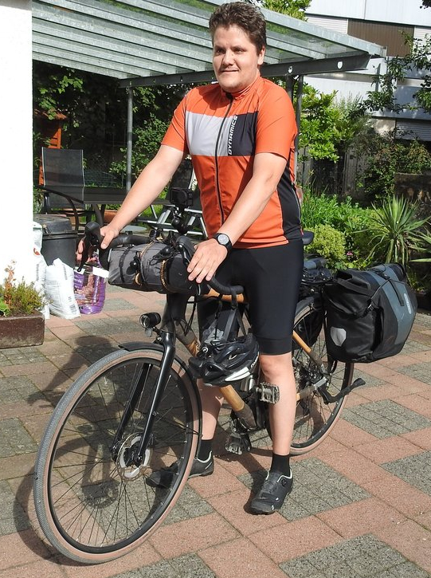

Über mich

Mein Name ist Frank Wünsch, ich bin am 04.01.1995 in Stuttgart (BW) geboren und bin seit meiner Bodenseerundtour 2022 von der Langstrecke bzw. mehrtägigen Ganztagestouren mit dem Fahrrad begeistert. Alle Touren die ich hier vorstelle habe ich selbst geplant und auch selbst dokumentiert. Sämtliche Empfehlungen basieren ausschließlich auf eigenen Erfahrungen und beziehen sich auf den Zeitpunkt meines Besuches.
Disclaimer und Haftungsausschluss
Bei den verlinkten Internetseiten handelt es sich nicht um Affiliate Links, sondern lediglich um die Webseiten der jeweils genannten Unterkunft oder Gastwirtschaft etc., sofern nicht anders gekennzeichnet. Desweiteren bin ich nicht für die Inhalte auf der von mir verlinkten Internetseiten zuständig. Bei Beanstandungen zum Inhalt der jeweiligen Seite bitte ich dennoch darum, mir eine Mail zu schreiben, dass ich den Link gegebenenfalls entfernen, oder die Daten auf meiner Seite aktualisieren kann.